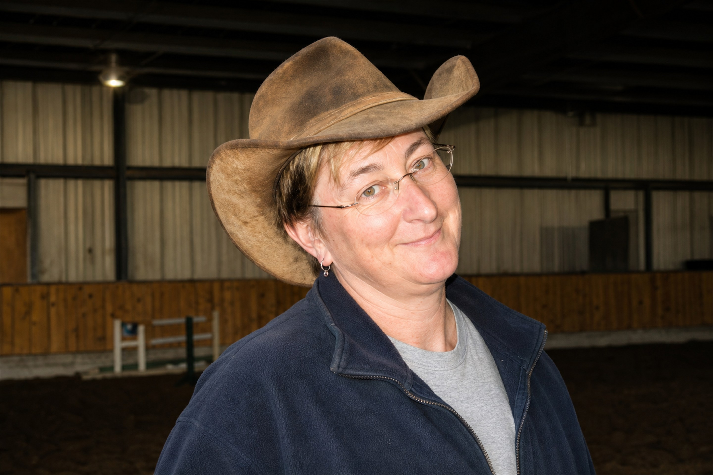

About
Liw Bringelson, PhD CEMT CST

Liw (short for Liwana) has been a horse person her whole life. Her educational background includes studies in human factors, ergonomics, social psychology, and engineering. For more than twenty years she has been interested in how people can use systems safely, efficiently, and effectively.
Finding Quiet Equine continues those objectives, integrating an engineering problem-solving approach with an intuitive, listening way of observing and working with horses.
Dr. Bringelson earned a PhD from Purdue University in Industrial Engineering and cognitive human factors in 1991, then worked as a university faculty member in the US and Canada. By 2008 she chose to combine systematic problem-solving and research with her love of horses. Training at Prairie Winds College of Equine Massage included equine anatomy, pathology, movement, natural horsemanship, massage, and business.
Her practice is located in southern Ontario horse country around Simcoe and Grey counties, especially the Georgian Triangle (Collingwood, Thornbury, Orangeville). She is also frequently in the Kitchener–Waterloo–Guelph area and can schedule barn days there.
Continued study
Liw keeps looking for information that helps her provide effective treatments for her clients — the horses. Recent topics include:
- Eco-Somatics — Level 1 (Oct 2010), Level 2 (June 2011)
- Therapeutic Touch — Levels I, II, and III (2008–2010)
- Cranial Sacral Therapy — Level I (Dec 2008) and Level II (Nov 2009)
- Natural horsemanship, including Parelli and Irwin — ongoing
Arrange a consultation
Local Collingwood number. Reach out to meet and work with your horse.